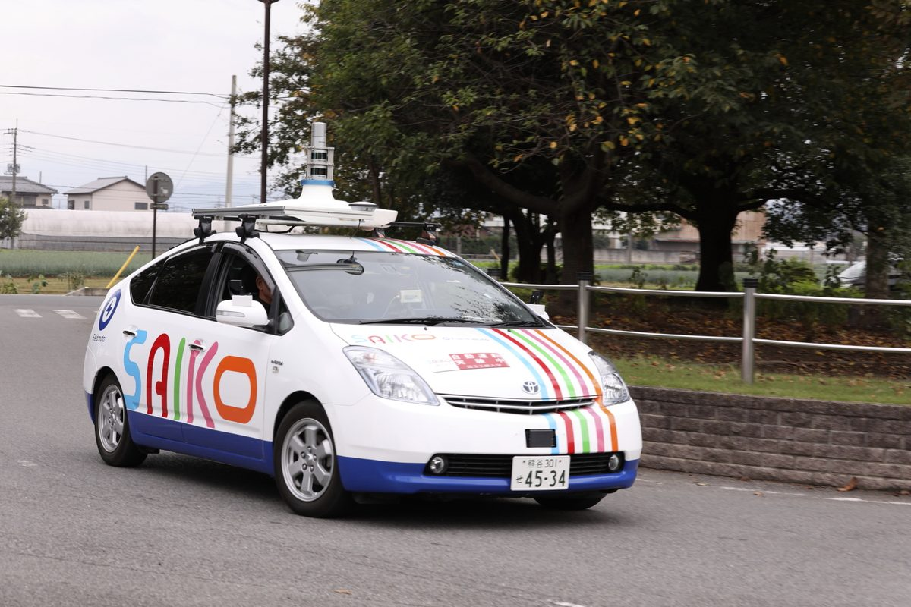

Your code drives a real bus through a real town.
"Kururin", the community bus of Fukaya City, is an autonomous bus developed by this lab and the university's Autonomous Driving Technology Development Center. Sensor installation, AI, safety design and passenger service on public roads all happen inside the university.
Photo: Saitama Institute of Technology (Fukaya, 2025)
What we do
We do not study autonomous driving from a textbook. We study it on licensed buses that carry passengers. The lab covers everything from sensors to control to service on the street, and nothing is a black box.
-
 01
01Drive a real vehicle yourself
Mount LiDAR, cameras and radar, run the open-source Autoware stack, and drive on the test course and on public roads.
-
 02
02Train AI on real driving logs
More than 8,000 recorded runs (LiDAR, 4D radar, cameras, GNSS/IMU, vehicle CAN) feed diffusion-model trajectory planners and vision-language-action models, trained on the ABCI supercomputer.
-
 03
03Design for safety
Switching between LiDAR- and GNSS-based localization in town, detecting sensor faults, and emergency-stop paths that still work when software fails. Safety design is a research topic in itself.
-
 04
04Deploy with the city
We work with Fukaya City, the national government and bus operators to carry passengers. Students take part in test rides, school outreach and public events.
Autonomous buses built at the university
From a microbus in 2019 to full-size transit buses, an amphibious bus and a city community bus. With support from national, prefectural and municipal governments and a foundation, we have taken part in developing five autonomous buses.

Kururin (Isuzu Erga Mio)Fukaya City community bus since April 2025. Its full 37 km loop is driven autonomously (SAE Level 2). 
Full-size transit bus (Hino Rainbow II)Since 2020. First full-size autonomous bus in regular service in Saitama. Drove public roads in Nishi-Shinjuku, Tokyo, in 2023. 
Amphibious bus2022. Drives on land, enters the lake, navigates, avoids obstacles and lands again, all autonomously. A world first. 
Autonomous school busSince 2022, the first at a private university in Japan. Carries students between Okabe station and the campus on public roads. 
On the streets of Fukaya2024. Tour service for the event celebrating the new 10,000-yen note featuring Eiichi Shibusawa, a native of Fukaya. 
Test car2019. Students fit the sensors and try algorithms on campus and nearby roads. Every project starts here.
The more it drives, the smarter it gets
Every run of Kururin leaves a synchronized record of its sensors and vehicle state. Owning real operational data from a real town is the lab's biggest asset.
The data become research topics directly. Where did autonomy drop out? Why did the driver intervene? In which scenes does the path wobble? Read the log, find the cause, fix it, drive again. Undergraduates run that cycle in their graduation research.
- LiDAR, 4D radar, cameras, GNSS/IMU and vehicle CAN, recorded together
- More than 8,000 runs, about 17 TB, indexed by date, place and vehicle
- Used to train and evaluate learning-based planners (diffusion models, vision-language-action models)

Automation rate of Kururin (autonomous distance divided by planned autonomous distance) over time. Most days sit near 100%; the dips are what we investigate.
Three years in the lab
Students join in the second half of their third year and take on their own topic for graduation research. Graduate students aim for international conferences. The lab currently has 14 fourth-year and 17 third-year undergraduates and 3 doctoral students.
- Year 3
Seminar on the basics: Linux, ROS 2, Autoware, Python and C++, up to making the test car move.
- Sensor mounting and calibration
- Replaying and visualizing driving logs
- Helping seniors with their research
- Year 4
Graduation research with the real vehicles and data. Recent topics include:
- Safe passage through obstructed-view intersections with distributed cameras
- Smarter switching between LiDAR and GNSS localization
- Trajectory planning learned from driving logs
- Ear biometrics for unlocking smartphones
- Graduate school
Publish at international conferences and in journals. Doctoral students are core members of the Development Center's engineering work.
- Presentations at IEEE IECON and other conferences
- Joint projects with government and industry
- Two PhD alumni continue development as research engineers

Lab membersWith the test car (2019) 
Inside the autonomous school busCommuting on a bus you helped build (2022) 
Outreach for schoolchildren"Imagining a society with autonomous driving" (Fukaya, 2023)
Milestones
- Autoware deployed on a Hino Liesse II microbus, the lab's first autonomous bus
- First autonomous bus in regular service in Saitama Prefecture
- First full-size autonomous bus in regular service in Saitama
- World's first unmanned driving and navigation of an amphibious busWorld first
- First full-size autonomous school bus at a private university in Japan
- Full-size autonomous bus on public roads in Nishi-Shinjuku, Tokyo
- Outreach class for schoolchildren in Fukaya
- Autonomous Driving Technology Development Center expanded
- Japan's first autonomous bus rides on renewable dieselJapan first
- Autonomous service of the Fukaya community bus "Kururin" begins
- Full 37 km Kururin loop driven autonomously
- Fukaya Bus Summit held
Prof. Daishi Watabe

Daishi Watabe, Dr. Sci.
Professor, Department of Information Systems, Faculty of Engineering, and Graduate School of Engineering
Vice President, Saitama Institute of Technology
Director, Autonomous Driving Technology Development Center
Research and education on AI-based image recognition for autonomous driving and biometrics. Has led the university's autonomous bus development since late 2018 and directs the Autonomous Driving Technology Development Center (established 2019). Member of the MLIT working group on safety standards for autonomous ships, and of ISO/IEC JTC 1/SC 37 (biometrics).
- Degree
- Dr. Sci., Tohoku University
- dw@sit.ac.jp
- researchmap
- researchmap.jp/daishiwatabe
- ORCID
- 0000-0003-2731-2226
- Scholar
- Google Scholar
- Teaching
- Information and Coding Theory; Statistical Processing I; Basic Information Engineering Laboratory; Applied Programming Languages; Advanced Media Engineering (graduate)
Professional service
- Member, Working Group on Safety Standards and Inspection, Study Group on Autonomous Ships, Maritime Bureau, MLIT (2024–2025)
- Member, ISO/IEC JTC 1/SC 37 Biometrics (2016–2025); Secretary, WG4 and WG6 (2018–2025)
- Member, IEICE Technical Committee on Biometrics (2014–)
- Editorial Planning Board, Institute of Image Information and Television Engineers (2015–)
- Program Chair, International Conference on Biometrics and Kansei Engineering (2019)
Selected publications
- Enhancing Safe Driving of Autonomous Buses in Obstructed-View Conditions Using Distributed Monocular Cameras. IEEE IECON 2024. doi
- Improvement of Self-Localization Sensor Transition Based on Autonomous Driving. IEEE IECON 2023. doi
- World's first self-driving amphibious bus. International Robotics & Automation Journal, 2023. doi
- ACDR: Autonomous-car drive recorder. Journal of Robotics and Mechatronics, 2020. doi
- Joystick Car Drive System and its Application to Self-driving Microbus. IEEE IECON 2020. doi
- Use of Generated Ear Images by GAN to Biometrics Based on Deep Learning. IEICE Transactions A, 2020. doi
Full list (77 papers): researchmap
Come and see the buses.
Prospective students, graduate applicants, and companies or municipalities considering joint research are all welcome to visit. Email us to arrange a date.
Department of Information Systems, Faculty of Engineering
Saitama Institute of Technology
1690 Fusaiji, Fukaya, Saitama 369-0293, Japan
Email: dw@sit.ac.jp · Tel: +81-48-585-2940